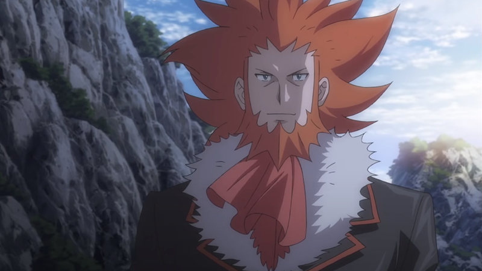
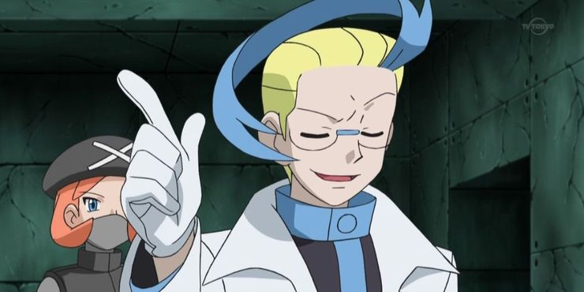

Charmander
Prefiere las cosas calientes. Dicen que cuando llueve le sale vapor de la punta de la cola.
Beedrill
Tiene tres aguijones venenosos, dos en las patas anteriores y uno en la parte baja del abdomen, con los que ataca a sus enemigos una y otra vez.
Squirtle
Cuando retrae su largo cuello en el caparazón, dispara agua a una presión increíble.
Pikachu
Cuanto más potente es la energía eléctrica que genera este Pokémon, más suaves y elásticas se vuelven las bolsas de sus mejillas.

Giovanni, Líder del Team Rocket
Giovanni, además de ser el Líder del Team Rocket es también el Líder del Gimnasio de Ciudad Verde, el que otorga del octava medalla. Este personaje es un mafioso en toda regla, buscando enriquecerse lo máximo posible a través de la explotación de los Pokémon.
Lysson, Líder del Team Flare
Lysson apareció por primara vez con Pokémon X e Y como Líder del Team Flare, que intenta hacer un mundo mejor a costa de perjudicar a otros sin importarle las consecuencias de sus actos.
Acromo, del Equipo Plasma
Acromo es un científico de la región de Teselia que ayudaba a Ghechis, líder del Equipo Plasma. Se especializa en el control de Pokémon a través de ondas sónicas, algo que en el anime logró tanto con el Pikachu de Ash como con el Meowth del Team Rocket.